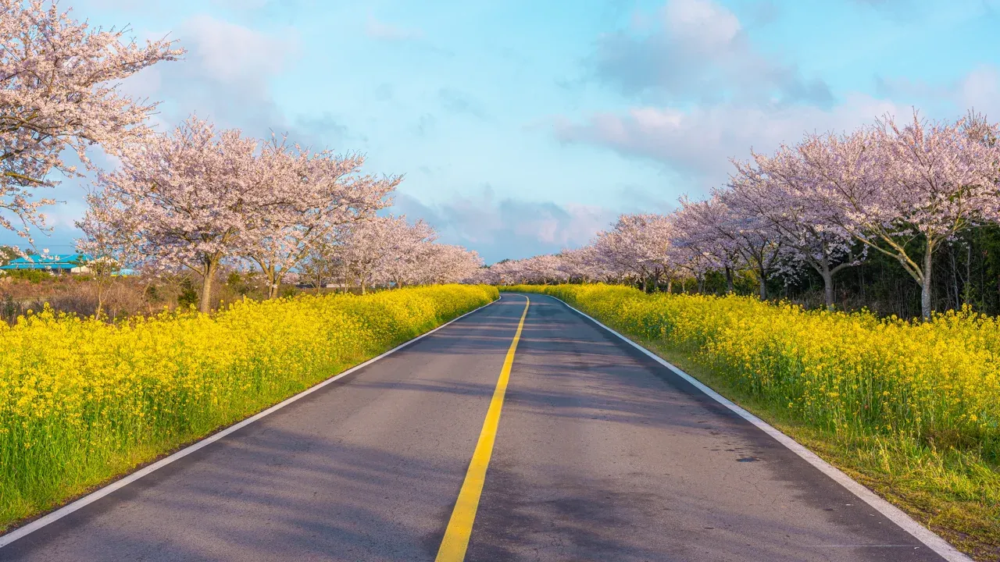
03 나의 제주찾기
살고 싶은 동네,
먼저 둘러볼까요?
바다 앞 산책부터 시장 골목의 일상까지.
나의 제주가 될 10개 동네를 만나 보세요.
‘나는 제주 어디 주민?’ 후속 기획
사진 · 녹산로 · 제주관광공사 · Visitjeju.net · 사용제한 없음 · 출처표기
01 — NEIGHBORHOODS
살고 싶은 동네
궁금한 동네를 고르면 그 동네의 명소 5곳을 보여 드려요.
제주시 노형·연동 · 공항 쪽
신제주
공항 가까이, 일상과 여행이 만나는 동네
든든한 생활 인프라파
-
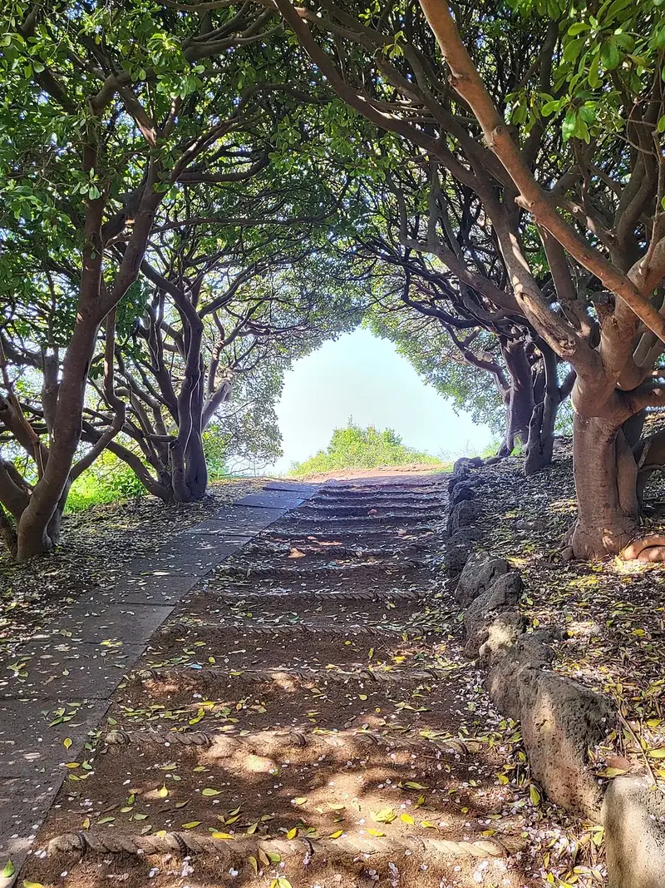
오름 · LOCAL SPOT 01
도두봉
비행기 이착륙과 바다를 함께 바라볼 수 있는 오름.
지도에서 위치 찾기사진 · Grapesurgeon · Wikimedia Commons · CC BY-SA 4.0
-
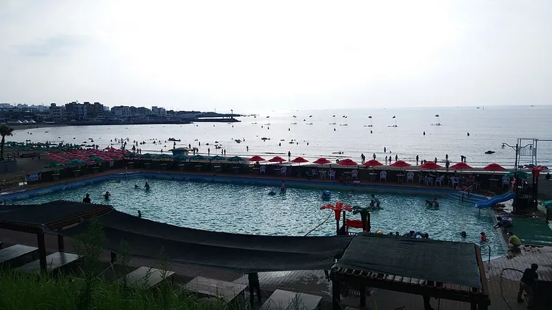
바다 · LOCAL SPOT 02
이호테우해변
빨강·하양 말 등대로 잘 알려진 공항 옆 해변.
지도에서 위치 찾기사진 · song songroov · Wikimedia Commons · CC BY 3.0
-
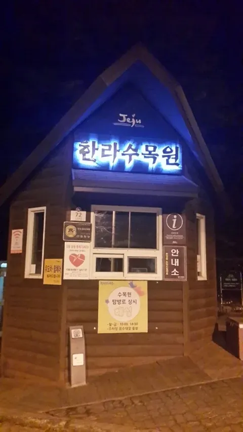
숲 · LOCAL SPOT 03
한라수목원
도심 속 숲 산책로에서 일상 가까운 초록을 만나는 곳.
지도에서 위치 찾기사진 · Mar del Este · Wikimedia Commons · CC BY 3.0
-
PHOTO ARCHIVE사진 준비 중
-
PHOTO ARCHIVE사진 준비 중
제주시 삼도·일도·탑동
원도심
걸어서 만나는 제주의 옛 중심
골목 산책 뚜벅이
-
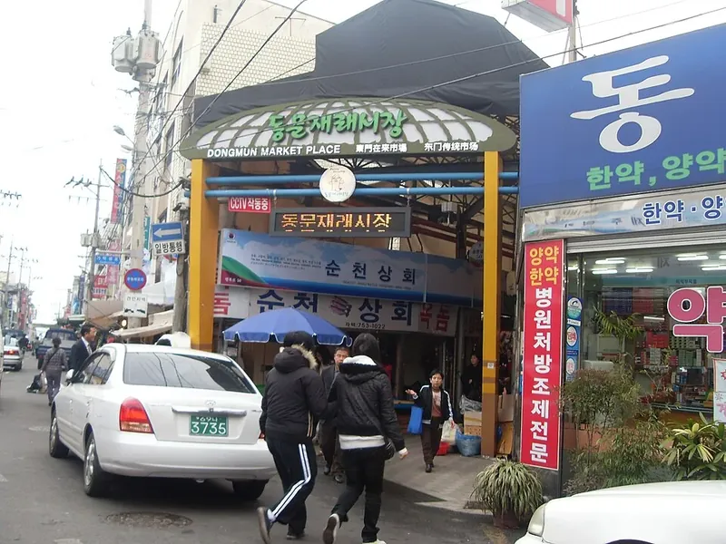
시장 · LOCAL SPOT 01
동문재래시장
제주의 먹거리와 일상을 가까이서 둘러보는 상설시장.
지도에서 위치 찾기사진 · thddbwnd · Wikimedia Commons · CC BY 3.0
-
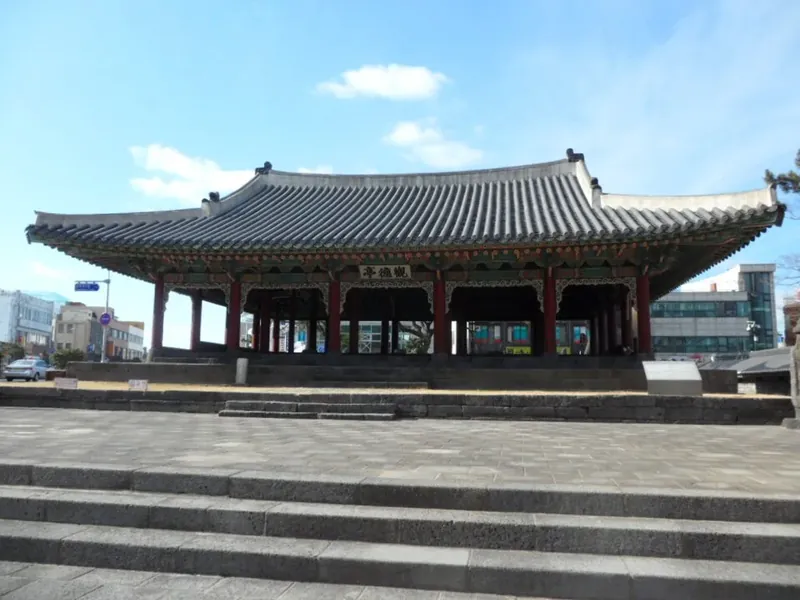
역사 · LOCAL SPOT 02
제주목 관아·관덕정
조선시대 제주 관아 터와 원도심의 역사를 만나는 공간.
지도에서 위치 찾기사진 · Thddbwnd · Wikimedia Commons · CC BY-SA 3.0
-
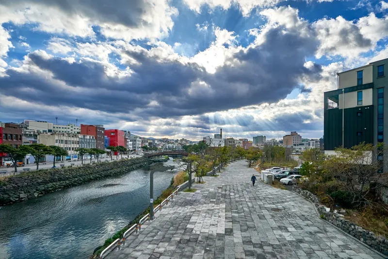
산책 · LOCAL SPOT 03
산지천
원도심을 가로지르는 하천을 따라 걷는 산책길.
지도에서 위치 찾기사진 · 제주관광공사 · Visitjeju.net · 사용제한 없음 · 출처표기
-
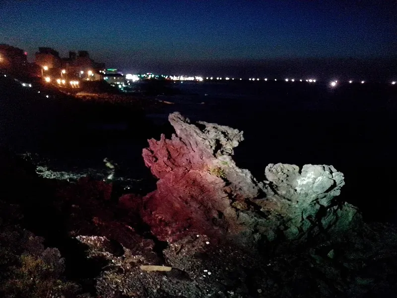
바다 · LOCAL SPOT 04
용두암·용연구름다리
용머리 모양 바위와 계곡 위 다리를 함께 둘러보는 코스.
지도에서 위치 찾기사진 · 螺钉 · Wikimedia Commons · CC BY-SA 3.0
-
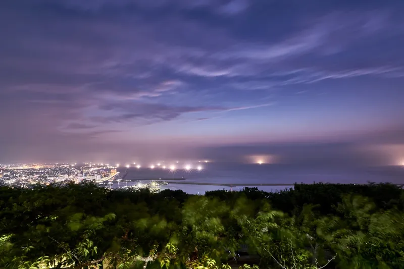
제주시 조천읍
함덕
동쪽 바다 가까이 머무는 하루
바다 앞 워케이셔너
-
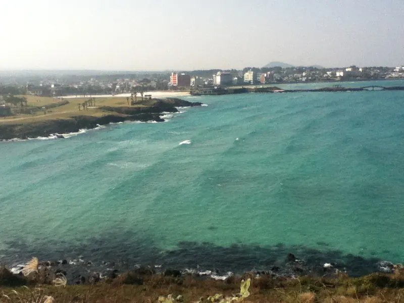
바다 · LOCAL SPOT 01
함덕해수욕장
에메랄드빛 바다와 해변의 카페를 함께 만나는 곳.
지도에서 위치 찾기사진 · Thddbwnd · Wikimedia Commons · CC BY-SA 3.0
-
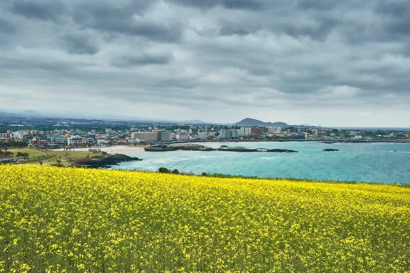
오름 · LOCAL SPOT 02
서우봉
함덕 해변 옆 오름. 봄 유채와 해안 산책 풍경으로 알려져 있습니다.
지도에서 위치 찾기사진 · 제주관광공사 · Visitjeju.net · 사용제한 없음 · 출처표기
-
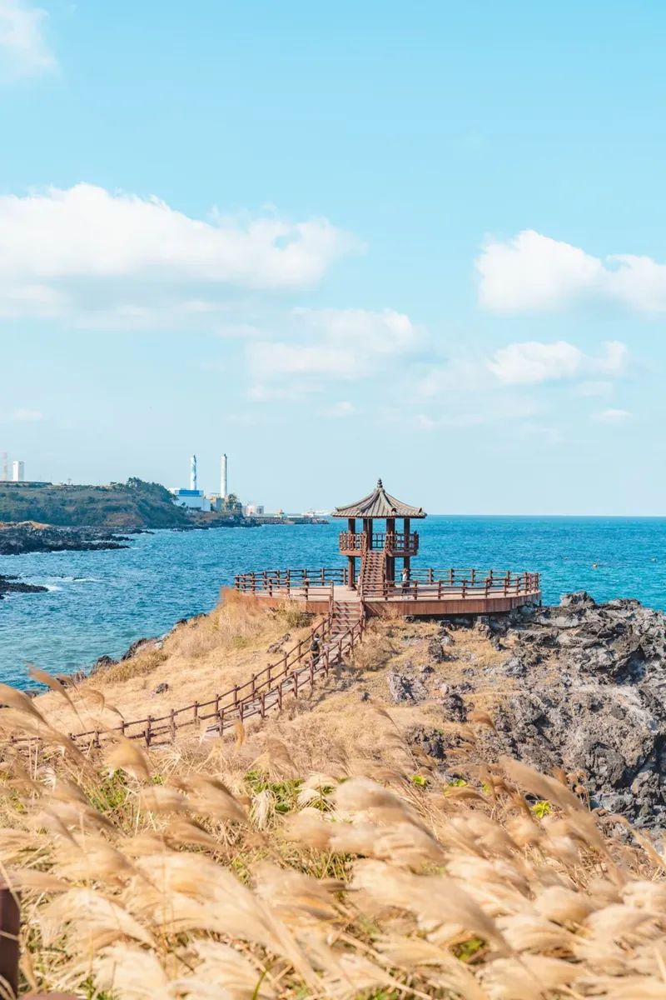
산책 · LOCAL SPOT 03
닭머르 해안길
신촌리의 해안 산책로와 정자에서 바다를 바라보는 길.
지도에서 위치 찾기사진 · 제주관광공사 · Visitjeju.net · CC BY
-
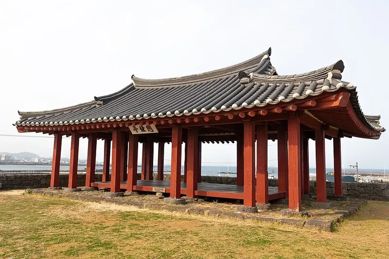
-
PHOTO ARCHIVE사진 준비 중
구좌읍 세화·종달·월정
구좌
오일장 가는 날이 기다려지는 마을
느린 밭마을 주민
-
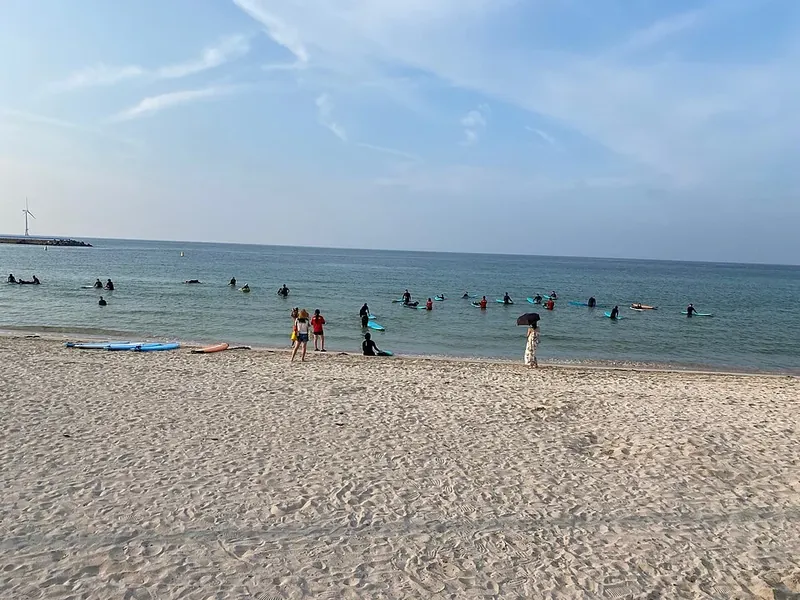
바다 · LOCAL SPOT 01
월정리해변
하얀 모래와 투명한 바다, 해변 카페가 있는 해안.
지도에서 위치 찾기사진 · Sgroey · Wikimedia Commons · CC BY-SA 4.0
-
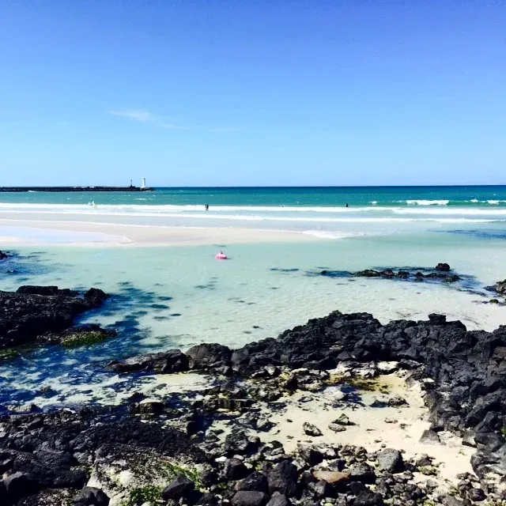
마을 · LOCAL SPOT 02
세화해변·세화오일장
잔잔한 해변과 마을의 장을 함께 둘러보는 곳. 장날은 방문 전 확인해 주세요.
지도에서 위치 찾기사진 · Bohyunlee · Wikimedia Commons · CC BY-SA 4.0
-
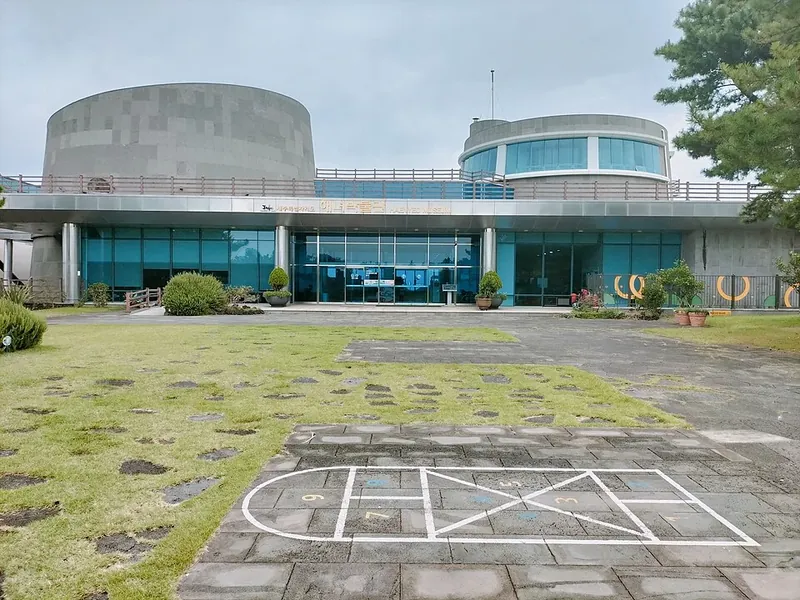
문화 · LOCAL SPOT 03
해녀박물관
하도리에서 제주 해녀의 삶과 일을 살펴보는 박물관.
지도에서 위치 찾기사진 · Vanbasten 23 · Wikimedia Commons · CC BY-SA 3.0
-
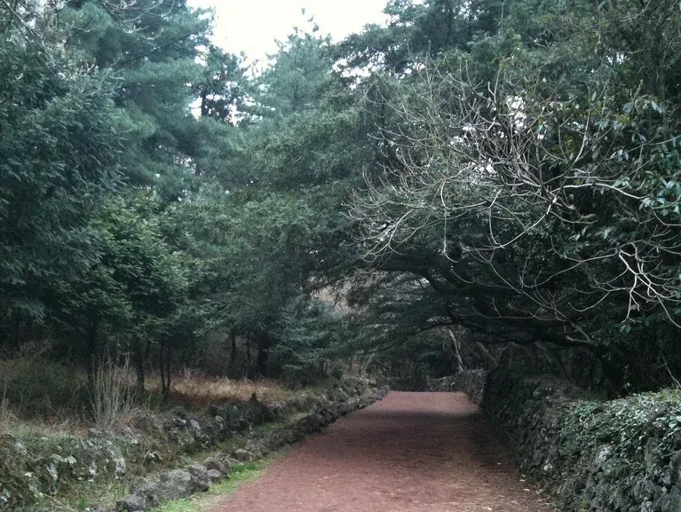
숲 · LOCAL SPOT 04
비자림
수백 년 된 비자나무가 있는 평대리의 숲길.
지도에서 위치 찾기사진 · TKostolany · Wikimedia Commons · CC BY-SA 4.0
-
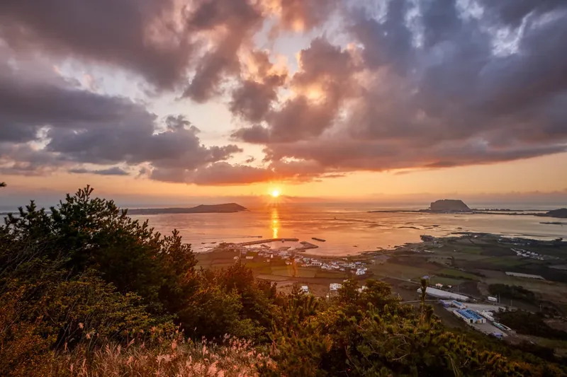
오름 · LOCAL SPOT 05
지미봉·종달리
제주 동쪽의 오름과 종달리 마을 골목을 함께 걷는 코스.
지도에서 위치 찾기사진 · 제주관광공사 · Visitjeju.net · CC BY
서귀포시 표선면·남원읍
표선·남원
아무것도 안 해도 되는 남동쪽
느긋한 쉼표형
-
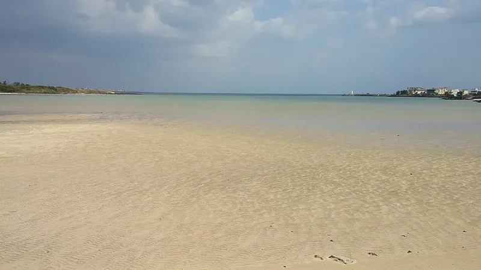
바다 · LOCAL SPOT 01
표선해수욕장
썰물 때 드넓게 드러나는 백사장을 만나는 해변.
지도에서 위치 찾기사진 · Jocelyndurrey · Wikimedia Commons · CC BY-SA 4.0
-
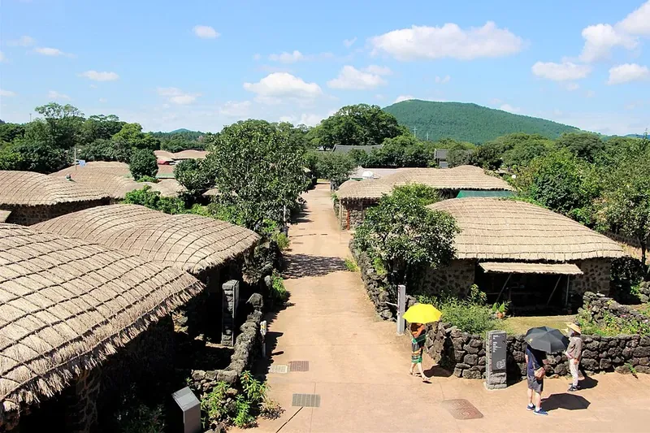
역사 · LOCAL SPOT 02
성읍민속마을
초가집과 돌담이 남아 있는 옛 정의현 마을.
지도에서 위치 찾기사진 · Trainholic · Wikimedia Commons · CC BY-SA 4.0
-
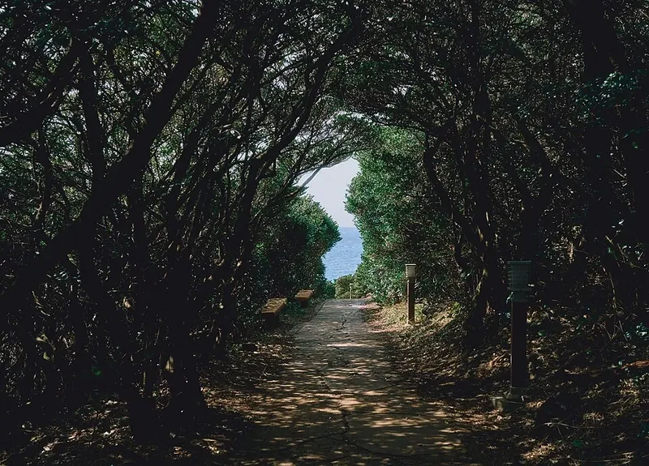
산책 · LOCAL SPOT 03
큰엉해안경승지
해안 절벽을 따라 걸으며 나무 사이로 바다를 보는 산책로.
지도에서 위치 찾기사진 · Jeju Olle Foundation · Wikimedia Commons · CC BY-SA 4.0
-
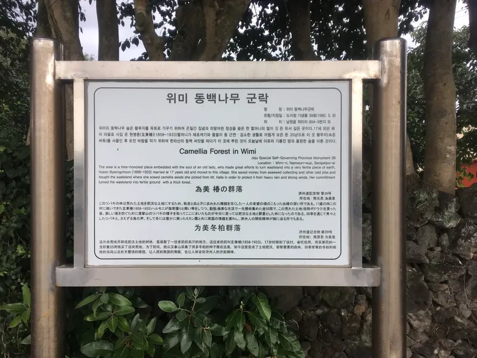
숲 · LOCAL SPOT 04
위미 동백군락지
겨울 동백 풍경으로 알려진 위미리의 마을 숲.
지도에서 위치 찾기사진 · Thomas Housieaux · Wikimedia Commons · CC BY-SA 4.0
-
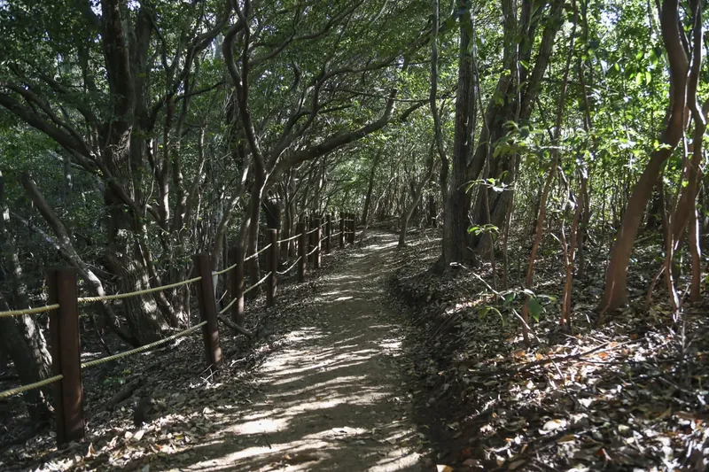
숲 · LOCAL SPOT 05
머체왓숲길
한남리에서 조용히 걸어보는 숲 산책길.
지도에서 위치 찾기사진 · 제주관광공사 · Visitjeju.net · 사용제한 없음 · 출처표기
서귀포시 시내
서귀포 시내
폭포와 시장을 잇는 동네 산책길
따뜻한 남쪽 생활러
-
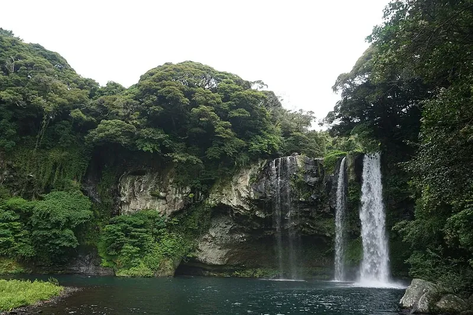
폭포 · LOCAL SPOT 01
천지연폭포
서귀포 시내 가까이에서 만나는 폭포와 산책로.
지도에서 위치 찾기사진 · Yhnn0065 · Wikimedia Commons · CC BY-SA 3.0
-
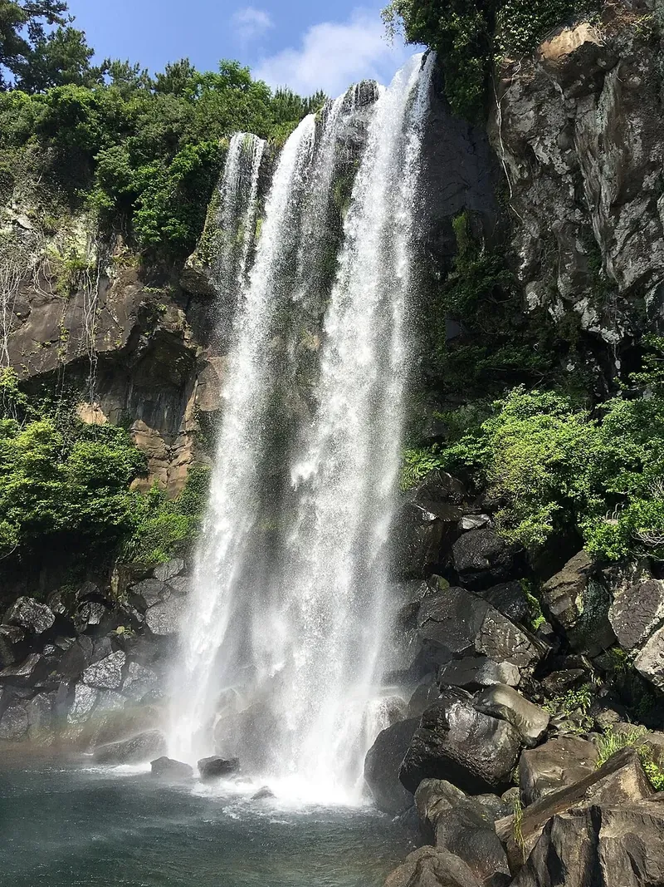
폭포 · LOCAL SPOT 02
정방폭포
바다로 바로 떨어지는 물줄기를 바라볼 수 있는 폭포.
지도에서 위치 찾기사진 · Badara25.ba · Wikimedia Commons · CC BY-SA 3.0
-
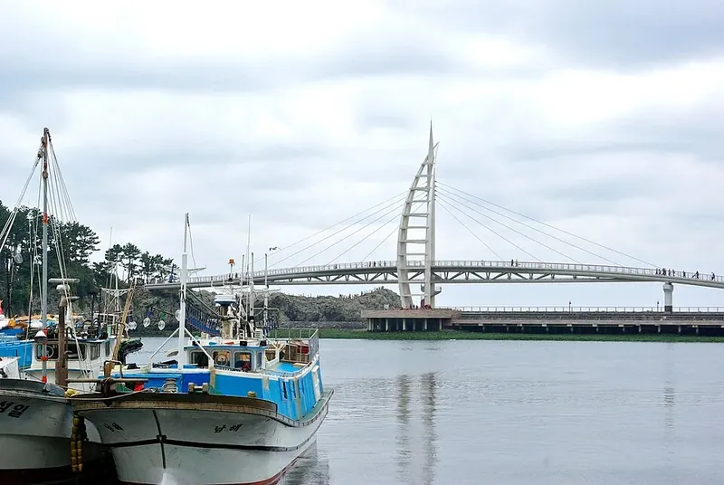
산책 · LOCAL SPOT 03
새연교·새섬
서귀포항에서 다리를 건너 섬을 둘러보는 산책 코스.
지도에서 위치 찾기사진 · Naturehead · Wikimedia Commons · CC BY-SA 3.0
-
PHOTO ARCHIVE사진 준비 중
-
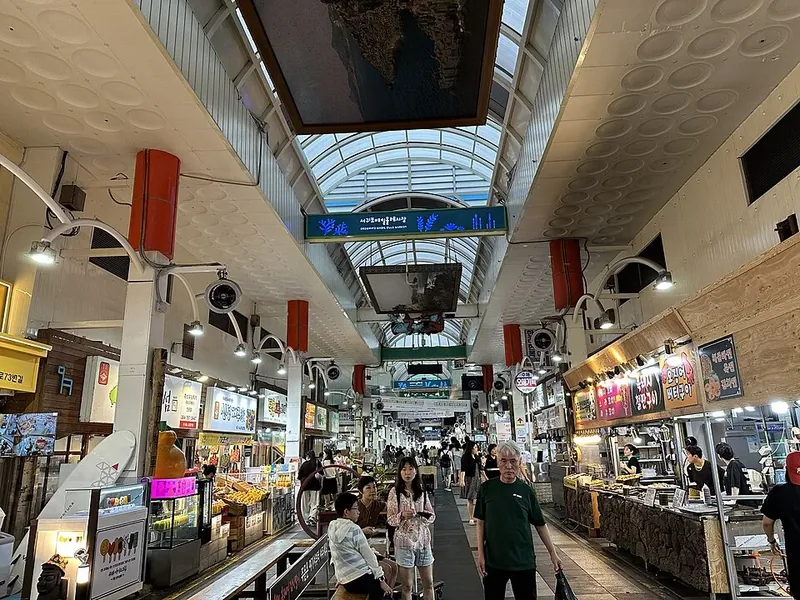
시장 · LOCAL SPOT 05
매일올레시장
장보기와 간식을 함께 즐길 수 있는 서귀포의 상설시장.
지도에서 위치 찾기사진 · Seefooddiet · Wikimedia Commons · CC BY-SA 4.0
서귀포시 안덕면·대정읍
안덕·대정
산방산이 보이는 조용한 서남쪽
한적한 서남쪽 은둔러
-
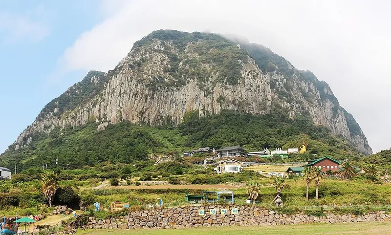
해안 · LOCAL SPOT 01
산방산·용머리해안
종 모양의 산과 겹겹의 해안 절벽을 만나는 곳. 용머리해안은 물때와 날씨에 따라 통제될 수 있습니다.
지도에서 위치 찾기사진 · Bernard Gagnon · Wikimedia Commons · CC0
-
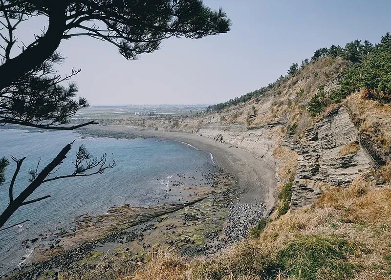
산책 · LOCAL SPOT 02
송악산 둘레길
형제섬과 가파도·마라도 쪽 풍경을 바라보며 걷는 바닷길.
지도에서 위치 찾기사진 · Jeju Olle Foundation · Wikimedia Commons · CC BY-SA 4.0
-
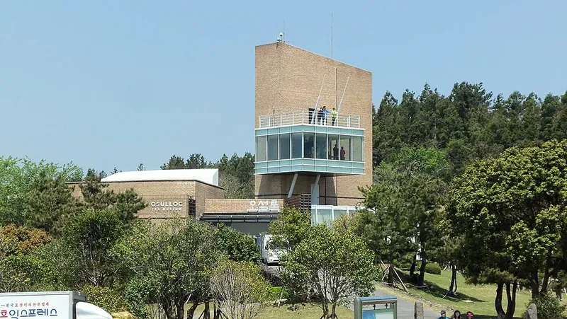
문화 · LOCAL SPOT 03
오설록 티뮤지엄
서광리 녹차밭과 차 문화를 함께 둘러보는 공간.
지도에서 위치 찾기사진 · Christian Bolz · Wikimedia Commons · CC BY-SA 4.0
-
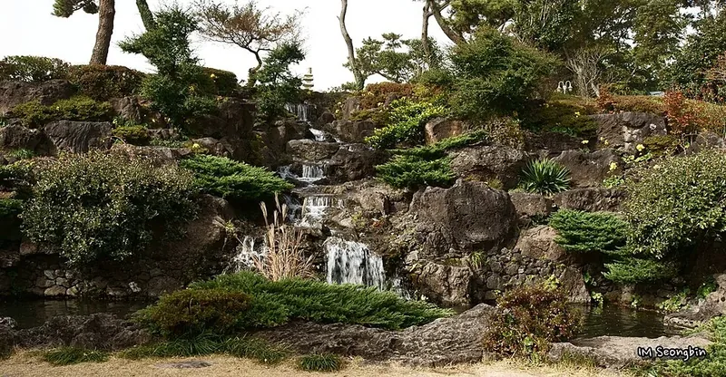
정원 · LOCAL SPOT 04
카멜리아힐
동백과 계절의 정원을 만나는 수목원.
지도에서 위치 찾기사진 · 골뱅이 · Wikimedia Commons · CC BY-SA 3.0
-
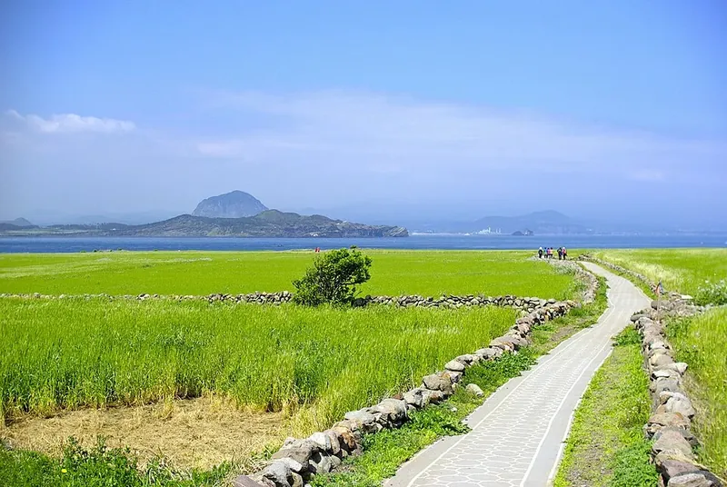
섬 · LOCAL SPOT 05
모슬포항·가파도
항구의 풍경과 섬의 산책을 함께 떠올리는 코스. 가파도 배편은 별도 확인해 주세요.
지도에서 위치 찾기사진 · Naturehead · Wikimedia Commons · CC BY-SA 3.0
한림읍 협재·금능
한림
매일 아침 바다 색을 확인하는 동네
에메랄드 바다 산책러
-
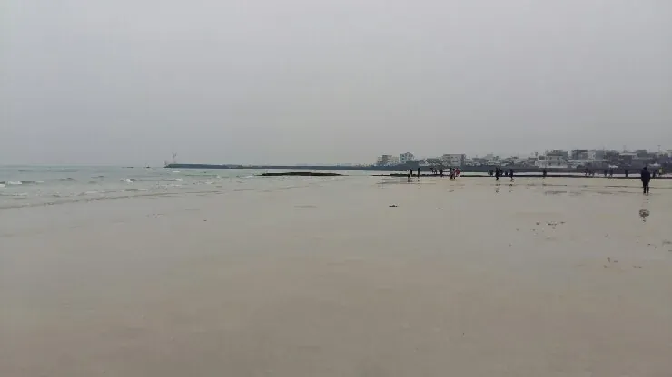
바다 · LOCAL SPOT 01
협재해수욕장
비양도를 바라보며 에메랄드빛 바다를 만나는 해변.
지도에서 위치 찾기사진 · 멍한오리 · Wikimedia Commons · CC BY-SA 3.0
-
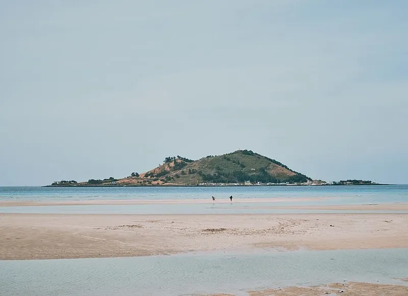
바다 · LOCAL SPOT 02
금능해수욕장
협재 옆에서 모래사장과 바다를 천천히 즐기는 해변.
지도에서 위치 찾기사진 · Jeju Olle Foundation · Wikimedia Commons · CC BY-SA 4.0
-
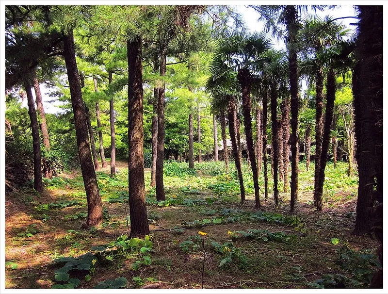
정원 · LOCAL SPOT 03
한림공원
식물과 동굴 등 여러 공간을 둘러보는 정원형 공원.
지도에서 위치 찾기사진 · pictures Jettcom · Wikimedia Commons · CC BY 3.0
-
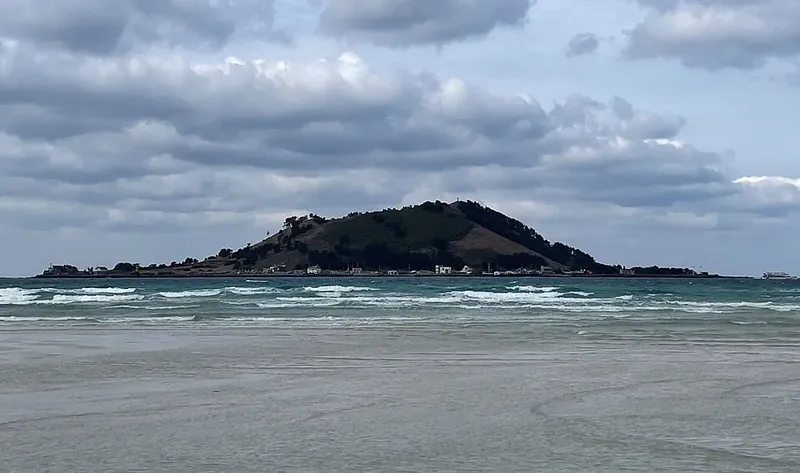
섬 · LOCAL SPOT 04
비양도
한림항에서 배로 들어가는 작은 섬. 운항 정보를 먼저 확인해 주세요.
지도에서 위치 찾기사진 · 베르니사주 · Wikimedia Commons · CC BY 4.0
-
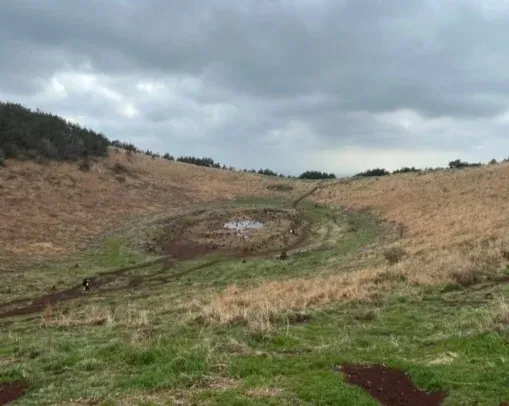
오름 · LOCAL SPOT 05
성이시돌목장·금오름
목장의 풍경과 오름의 분화구를 함께 둘러보는 코스.
지도에서 위치 찾기사진 · 봄삐 · Wikimedia Commons · CC BY 2.0 kr
제주시 애월읍
애월
노을 시간에 떠오르는 해안길
노을 카페 감성러
-
PHOTO ARCHIVE사진 준비 중
-
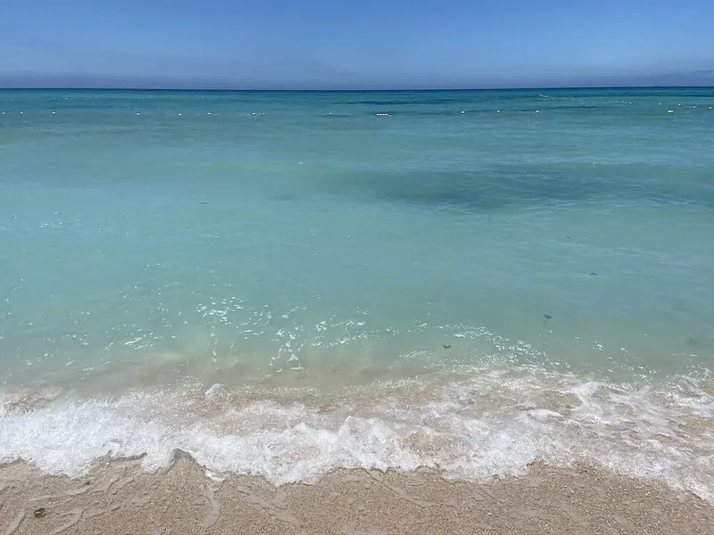
바다 · LOCAL SPOT 02
곽지해수욕장
넓은 백사장과 용천수 노천탕 과물로 알려진 해변.
지도에서 위치 찾기사진 · Jeong seolah · Wikimedia Commons · CC0
-
PHOTO ARCHIVE사진 준비 중
-
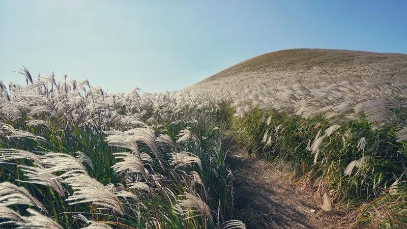
-
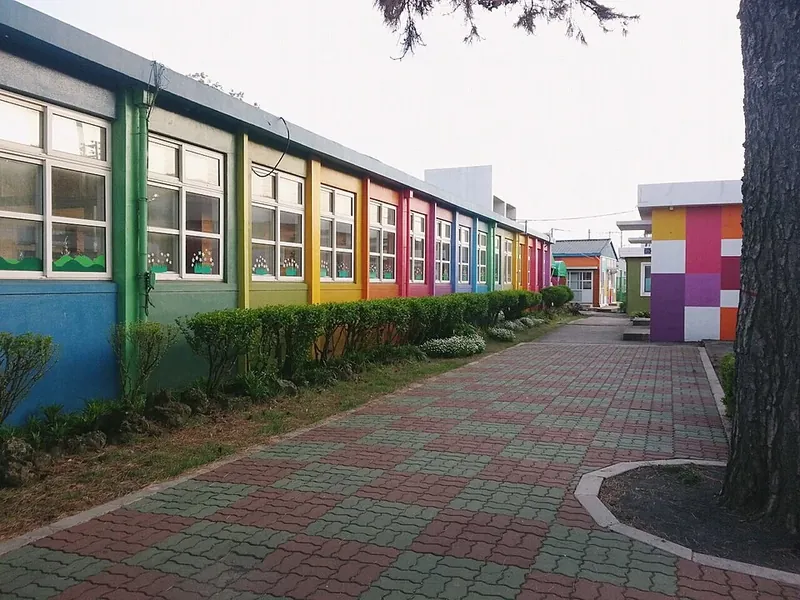
마을 · LOCAL SPOT 05
하가리 더럭분교·연화지
알록달록한 학교 외관과 연못 풍경. 학교는 교육 공간이므로 출입 안내를 지켜주세요.
지도에서 위치 찾기사진 · Nt · Wikimedia Commons · CC BY-SA 4.0
송당·가시리·교래 일대
중산간
바다 대신 오름이 보이는 집
오름·숲 탐험가
-
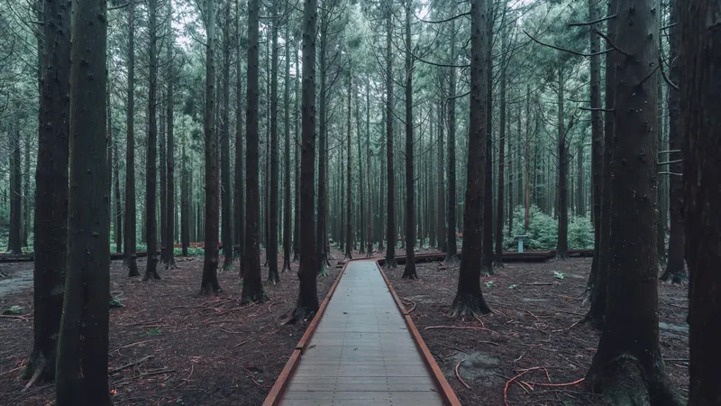
숲 · LOCAL SPOT 01
사려니숲길
삼나무 숲 사이로 이어지는 길을 걷는 시간.
지도에서 위치 찾기사진 · 제주관광공사 · Visitjeju.net · 사용제한 없음 · 출처표기
-
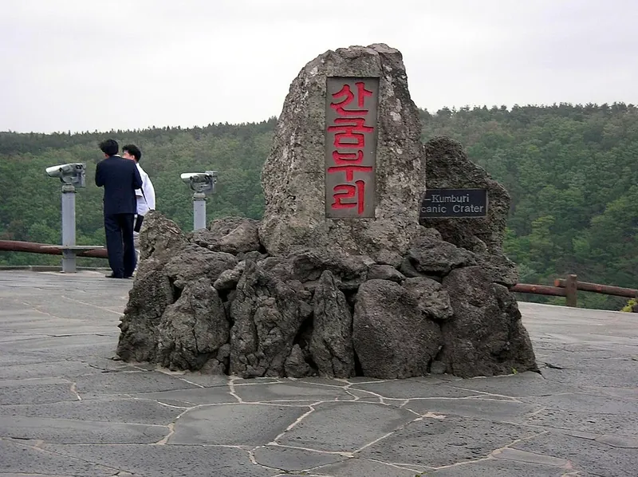
오름 · LOCAL SPOT 02
산굼부리
교래리의 분화구와 가을 억새 풍경을 만나는 곳.
지도에서 위치 찾기사진 · Integral · Wikimedia Commons · CC BY-SA 2.0 kr
-
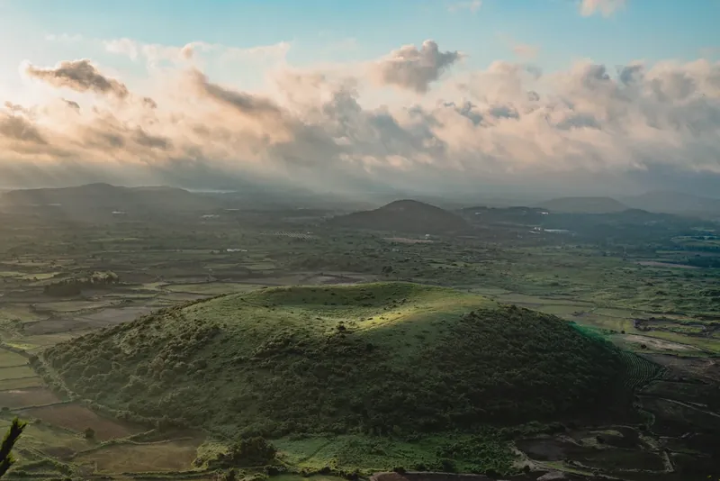
오름 · LOCAL SPOT 03
다랑쉬오름·아부오름
송당 일대의 서로 다른 오름 풍경을 둘러보는 코스.
지도에서 위치 찾기사진 · 제주관광공사 · Visitjeju.net · CC BY
-
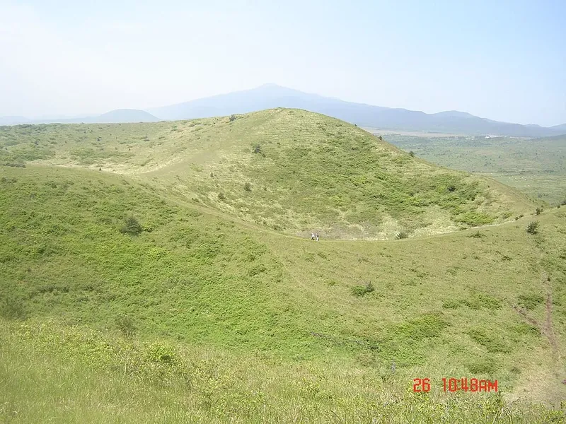
오름 · LOCAL SPOT 04
따라비오름
가시리에서 부드럽게 이어지는 능선을 만나는 오름.
지도에서 위치 찾기사진 · Thddbwnd · Wikimedia Commons · CC BY-SA 3.0
-
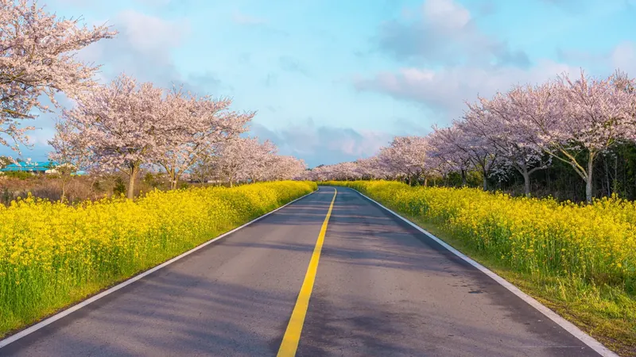
풍경 · LOCAL SPOT 05
녹산로
가시리의 봄 유채꽃과 벚꽃 풍경으로 알려진 길.
지도에서 위치 찾기사진 · 제주관광공사 · Visitjeju.net · 사용제한 없음 · 출처표기
01 / 05
02 — CHECKLIST
제주살이 체크리스트
집부터 일, 이동과 관계까지 6개 주제·24개 질문. 직접 확인한 것을 눌러 표시해 보세요.
0 / 24개 확인
이주 적합성을 판단하는 점수가 아니라, 나의 준비 기록이에요.
표시한 내용은 이 브라우저에만 저장돼요. 서버로 보내지 않아요.
01집과 동네0 / 4
02일과 수입0 / 4
03생활비와 이사0 / 4
04이동과 생활시설0 / 4
05가족과 반려동물0 / 4
06관계와 정착 계획0 / 4
03 — POLICY
정책모음
제주에서 기회를 찾아보기
정책 자료를 준비하고 있어요
정리가 끝나는 대로 이 자리에 모아 둘게요.
이 페이지에 관하여
- 동네 구분은 이 콘텐츠에서 둘러보기 위해 나눈 것이라 행정구역 경계와 다를 수 있어요.
- 운영 시간·입장료·관람 가능 여부는 이 페이지에서 확인한 정보가 아니에요. 방문 전 해당 시설의 공식 안내를 확인해 주세요. 특히 용머리해안은 물때와 기상에 따라 통제될 수 있어요.
- 사진은 제주관광공사 Photo JEJU와 Wikimedia Commons의 공개 자료예요. 화면에 맞게 크기·형식을 바꾸고 잘랐어요. 촬영 시기에 따라 지금 모습과 다를 수 있어요.
사진 출처 모두 보기
- 녹산로 (첫 화면) 제주관광공사 · Visitjeju.net원본 사용제한 없음 · 출처표기
- 도두봉 Grapesurgeon · Wikimedia Commons원본 CC BY-SA 4.0
- 이호테우해변 song songroov · Wikimedia Commons원본 CC BY 3.0
- 한라수목원 Mar del Este · Wikimedia Commons원본 CC BY 3.0
- 동문재래시장 thddbwnd · Wikimedia Commons원본 CC BY 3.0
- 제주목 관아·관덕정 Thddbwnd · Wikimedia Commons원본 CC BY-SA 3.0
- 산지천 제주관광공사 · Visitjeju.net원본 사용제한 없음 · 출처표기
- 용두암·용연구름다리 螺钉 · Wikimedia Commons원본 CC BY-SA 3.0
- 사라봉 제주관광공사 · Visitjeju.net원본 CC BY
- 함덕해수욕장 Thddbwnd · Wikimedia Commons원본 CC BY-SA 3.0
- 서우봉 제주관광공사 · Visitjeju.net원본 사용제한 없음 · 출처표기
- 닭머르 해안길 제주관광공사 · Visitjeju.net원본 CC BY
- 조천 연북정 Nt · Wikimedia Commons원본 CC0
- 월정리해변 Sgroey · Wikimedia Commons원본 CC BY-SA 4.0
- 세화해변·세화오일장 Bohyunlee · Wikimedia Commons원본 CC BY-SA 4.0
- 해녀박물관 Vanbasten 23 · Wikimedia Commons원본 CC BY-SA 3.0
- 비자림 TKostolany · Wikimedia Commons원본 CC BY-SA 4.0
- 지미봉·종달리 제주관광공사 · Visitjeju.net원본 CC BY
- 표선해수욕장 Jocelyndurrey · Wikimedia Commons원본 CC BY-SA 4.0
- 성읍민속마을 Trainholic · Wikimedia Commons원본 CC BY-SA 4.0
- 큰엉해안경승지 Jeju Olle Foundation · Wikimedia Commons원본 CC BY-SA 4.0
- 위미 동백군락지 Thomas Housieaux · Wikimedia Commons원본 CC BY-SA 4.0
- 머체왓숲길 제주관광공사 · Visitjeju.net원본 사용제한 없음 · 출처표기
- 천지연폭포 Yhnn0065 · Wikimedia Commons원본 CC BY-SA 3.0
- 정방폭포 Badara25.ba · Wikimedia Commons원본 CC BY-SA 3.0
- 새연교·새섬 Naturehead · Wikimedia Commons원본 CC BY-SA 3.0
- 매일올레시장 Seefooddiet · Wikimedia Commons원본 CC BY-SA 4.0
- 산방산·용머리해안 Bernard Gagnon · Wikimedia Commons원본 CC0
- 송악산 둘레길 Jeju Olle Foundation · Wikimedia Commons원본 CC BY-SA 4.0
- 오설록 티뮤지엄 Christian Bolz · Wikimedia Commons원본 CC BY-SA 4.0
- 카멜리아힐 골뱅이 · Wikimedia Commons원본 CC BY-SA 3.0
- 모슬포항·가파도 Naturehead · Wikimedia Commons원본 CC BY-SA 3.0
- 협재해수욕장 멍한오리 · Wikimedia Commons원본 CC BY-SA 3.0
- 금능해수욕장 Jeju Olle Foundation · Wikimedia Commons원본 CC BY-SA 4.0
- 한림공원 pictures Jettcom · Wikimedia Commons원본 CC BY 3.0
- 비양도 베르니사주 · Wikimedia Commons원본 CC BY 4.0
- 성이시돌목장·금오름 봄삐 · Wikimedia Commons원본 CC BY 2.0 kr
- 곽지해수욕장 Jeong seolah · Wikimedia Commons원본 CC0
- 새별오름 제주관광공사 · Visitjeju.net원본 CC BY
- 하가리 더럭분교·연화지 Nt · Wikimedia Commons원본 CC BY-SA 4.0
- 사려니숲길 제주관광공사 · Visitjeju.net원본 사용제한 없음 · 출처표기
- 산굼부리 Integral · Wikimedia Commons원본 CC BY-SA 2.0 kr
- 다랑쉬오름·아부오름 제주관광공사 · Visitjeju.net원본 CC BY
- 따라비오름 Thddbwnd · Wikimedia Commons원본 CC BY-SA 3.0
- 녹산로 제주관광공사 · Visitjeju.net원본 사용제한 없음 · 출처표기
CC BY-SA 사진은 바꾼 사진에도 같은 라이선스가 적용돼요.